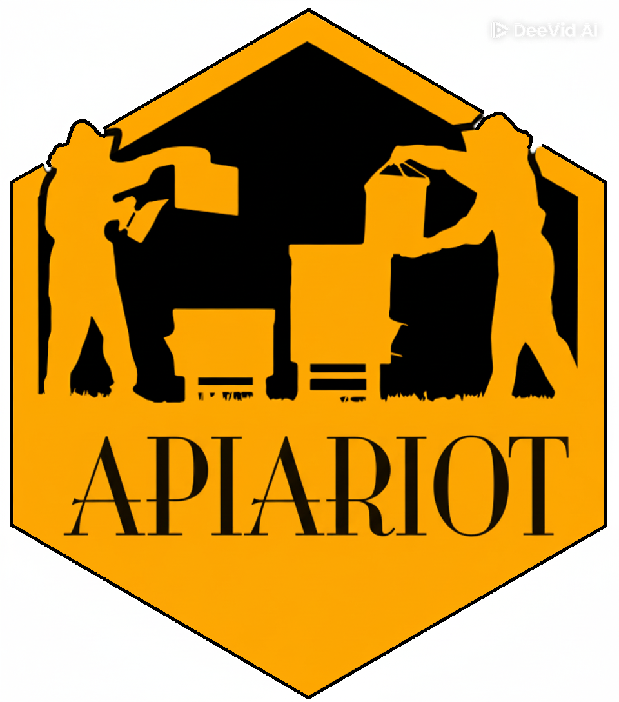
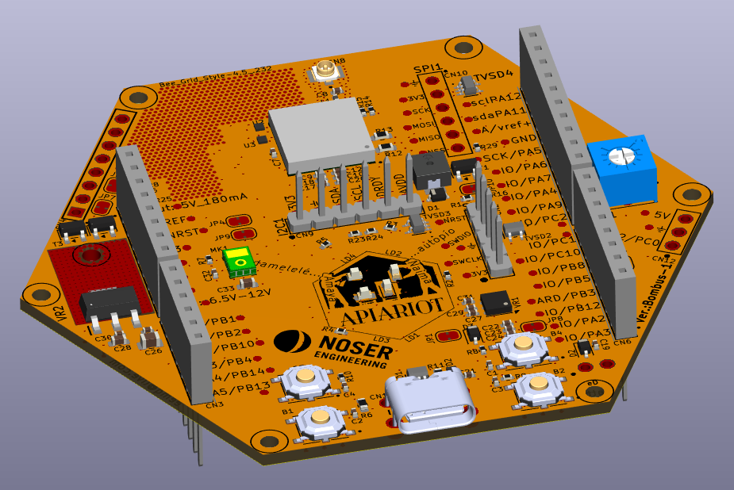

STMCubeIDE + STM32CubeMX + STM32CubeWL
LoraWAN end Node + STM32WL55JC1 + Datcake

Dokumentation: Erste Schritte im IoT mit LoRaWAN
LoraWAN end Node + STM32WL5MOCH6STR + STM32CubeWL + Datacake
Hardware Dein Projekt Firmware

Bombus 1